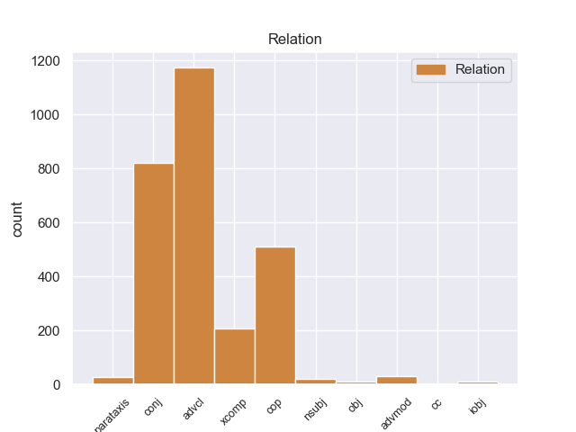
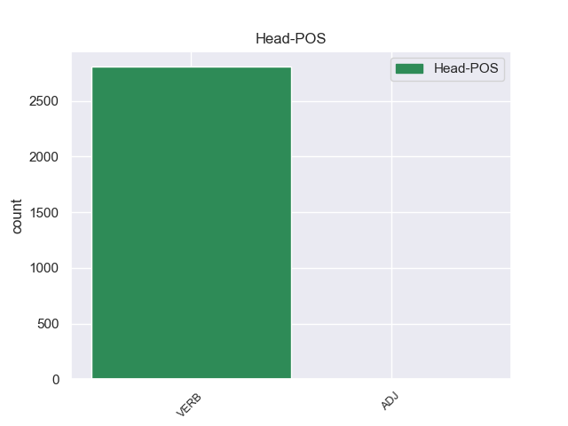
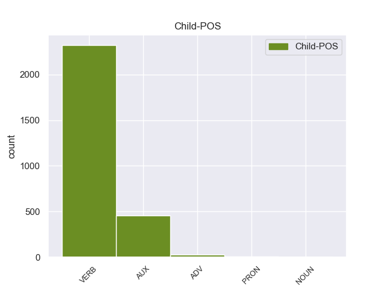

Distribution of features within this leaf



Agreement Rules sorted by frequency.
- When the dependent token is the adverbial clause modifier(advcl) of the head token, and the head token is VERB
1 " _ _ _ _ 0 _ _ _
2 Tenemos tenemos VERB _ Mood=Ind|Number=Sing|Person=3|Tense=Pres|VerbForm=Fin 0 _ _ _
3 todo _ _ _ _ 0 _ _ _
4 listo _ _ _ _ 0 _ _ _
5 , _ _ _ _ 0 _ _ _
6 la _ _ _ _ 0 _ _ _
7 venta _ _ _ _ 0 _ _ _
8 de _ _ _ _ 0 _ _ _
9 boletos _ _ _ _ 0 _ _ _
10 será _ _ _ _ 0 _ _ _
11 a _ _ _ _ 0 _ _ _
12 partir _ _ _ _ 0 _ _ _
13 de _ _ _ _ 0 _ _ _
14 mañana _ _ _ _ 0 _ _ _
15 de _ _ _ _ 0 _ _ _
16 8 _ _ _ _ 0 _ _ _
17 am _ _ _ _ 0 _ _ _
18 a _ _ _ _ 0 _ _ _
19 3 _ _ _ _ 0 _ _ _
20 pm _ _ _ _ 0 _ _ _
21 , _ _ _ _ 0 _ _ _
22 la _ _ _ _ 0 _ _ _
23 afición _ _ _ _ 0 _ _ _
24 de _ _ _ _ 0 _ _ _
25 el _ _ _ _ 0 _ _ _
26 Real _ _ _ _ 0 _ _ _
27 España _ _ _ _ 0 _ _ _
28 podrá _ _ _ _ 0 _ _ _
29 comprar _ _ _ _ 0 _ _ _
30 en _ _ _ _ 0 _ _ _
31 el _ _ _ _ 0 _ _ _
32 Banco _ _ _ _ 0 _ _ _
33 Continental _ _ _ _ 0 _ _ _
34 , _ _ _ _ 0 _ _ _
35 frente _ _ _ _ 0 _ _ _
36 a _ _ _ _ 0 _ _ _
37 el _ _ _ _ 0 _ _ _
38 estadio _ _ _ _ 0 _ _ _
39 Morazán _ _ _ _ 0 _ _ _
40 , _ _ _ _ 0 _ _ _
41 se _ _ _ _ 0 _ _ _
42 han _ _ _ _ 0 _ _ _
43 puesto _ _ _ _ 0 _ _ _
44 a _ _ _ _ 0 _ _ _
45 la _ _ _ _ 0 _ _ _
46 venta _ _ _ _ 0 _ _ _
47 800 _ _ _ _ 0 _ _ _
48 boletos _ _ _ _ 0 _ _ _
49 , _ _ _ _ 0 _ _ _
50 500 _ _ _ _ 0 _ _ _
51 en _ _ _ _ 0 _ _ _
52 sol _ _ _ _ 0 _ _ _
53 y _ _ _ _ 0 _ _ _
54 300 _ _ _ _ 0 _ _ _
55 en _ _ _ _ 0 _ _ _
56 preferencia _ _ _ _ 0 _ _ _
57 , _ _ _ _ 0 _ _ _
58 la _ _ _ _ 0 _ _ _
59 boletería _ _ _ _ 0 _ _ _
60 de _ _ _ _ 0 _ _ _
61 el _ _ _ _ 0 _ _ _
62 España _ _ _ _ 0 _ _ _
63 está _ _ _ _ 0 _ _ _
64 ya _ _ _ _ 0 _ _ _
65 identificada identificada VERB _ Mood=Ind|Number=Sing|Person=3|Tense=Pres|VerbForm=Fin 2 advcl _ _
66 con _ _ _ _ 0 _ _ _
67 el _ _ _ _ 0 _ _ _
68 escudo _ _ _ _ 0 _ _ _
69 de _ _ _ _ 0 _ _ _
70 el _ _ _ _ 0 _ _ _
71 equipo _ _ _ _ 0 _ _ _
72 y _ _ _ _ 0 _ _ _
73 con _ _ _ _ 0 _ _ _
74 el _ _ _ _ 0 _ _ _
75 color _ _ _ _ 0 _ _ _
76 amarillo _ _ _ _ 0 _ _ _
77 " _ _ _ _ 0 _ _ _
78 , _ _ _ _ 0 _ _ _
79 comentó _ _ _ _ 0 _ _ _
80 Rolin _ _ _ _ 0 _ _ _
81 . _ _ _ _ 0 _ _ _
1 Para _ _ _ _ 0 _ _ _
2 poder _ _ _ _ 0 _ _ _
3 estudiar _ _ _ _ 0 _ _ _
4 los _ _ _ _ 0 _ _ _
5 mejor _ _ _ _ 0 _ _ _
6 , _ _ _ _ 0 _ _ _
7 Ghazali _ _ _ _ 0 _ _ _
8 introdujo introdujo VERB _ Mood=Ind|Number=Sing|Person=3|Tense=Past|VerbForm=Fin 0 _ _ _
9 varios _ _ _ _ 0 _ _ _
10 peces _ _ _ _ 0 _ _ _
11 en _ _ _ _ 0 _ _ _
12 un _ _ _ _ 0 _ _ _
13 tanque _ _ _ _ 0 _ _ _
14 y _ _ _ _ 0 _ _ _
15 , _ _ _ _ 0 _ _ _
16 tras _ _ _ _ 0 _ _ _
17 varias _ _ _ _ 0 _ _ _
18 semanas _ _ _ _ 0 _ _ _
19 de _ _ _ _ 0 _ _ _
20 aclimatación _ _ _ _ 0 _ _ _
21 , _ _ _ _ 0 _ _ _
22 comenzó comenzar VERB _ Mood=Ind|Number=Sing|Person=3|Tense=Past|VerbForm=Fin 8 conj _ _
23 a _ _ _ _ 0 _ _ _
24 grabar _ _ _ _ 0 _ _ _
25 sus _ _ _ _ 0 _ _ _
26 sonidos _ _ _ _ 0 _ _ _
27 , _ _ _ _ 0 _ _ _
28 según _ _ _ _ 0 _ _ _
29 recoge _ _ _ _ 0 _ _ _
30 el _ _ _ _ 0 _ _ _
31 periódico _ _ _ _ 0 _ _ _
32 New _ _ _ _ 0 _ _ _
33 Zealand _ _ _ _ 0 _ _ _
34 Herald _ _ _ _ 0 _ _ _
35 . _ _ _ _ 0 _ _ _
1 En _ _ _ _ 0 _ _ _
2 los _ _ _ _ 0 _ _ _
3 premios _ _ _ _ 0 _ _ _
4 Empire _ _ _ _ 0 _ _ _
5 Awards _ _ _ _ 0 _ _ _
6 , _ _ _ _ 0 _ _ _
7 fue ser AUX _ Mood=Ind|Number=Sing|Person=3|Tense=Past|VerbForm=Fin 8 cop _ _
8 galardonado galardonado VERB _ Mood=Ind|Number=Sing|Person=3|Tense=Past|VerbForm=Fin 0 _ _ _
9 con _ _ _ _ 0 _ _ _
10 el _ _ _ _ 0 _ _ _
11 premio _ _ _ _ 0 _ _ _
12 honorífico _ _ _ _ 0 _ _ _
13 a _ _ _ _ 0 _ _ _
14 toda _ _ _ _ 0 _ _ _
15 su _ _ _ _ 0 _ _ _
16 carrera _ _ _ _ 0 _ _ _
17 cinematográfica _ _ _ _ 0 _ _ _
18 , _ _ _ _ 0 _ _ _
19 convirtiéndo _ _ _ _ 0 _ _ _
20 se _ _ _ _ 0 _ _ _
21 así _ _ _ _ 0 _ _ _
22 en _ _ _ _ 0 _ _ _
23 un _ _ _ _ 0 _ _ _
24 icono _ _ _ _ 0 _ _ _
25 de _ _ _ _ 0 _ _ _
26 la _ _ _ _ 0 _ _ _
27 Historia _ _ _ _ 0 _ _ _
28 de _ _ _ _ 0 _ _ _
29 el _ _ _ _ 0 _ _ _
30 cine _ _ _ _ 0 _ _ _
31 . _ _ _ _ 0 _ _ _
1 Una _ _ _ _ 0 _ _ _
2 vez _ _ _ _ 0 _ _ _
3 que _ _ _ _ 0 _ _ _
4 el _ _ _ _ 0 _ _ _
5 Hijo _ _ _ _ 0 _ _ _
6 de _ _ _ _ 0 _ _ _
7 Krypton _ _ _ _ 0 _ _ _
8 suelta suelta VERB _ Mood=Ind|Number=Sing|Person=3|Tense=Pres|VerbForm=Fin 13 xcomp _ _
9 el _ _ _ _ 0 _ _ _
10 misil _ _ _ _ 0 _ _ _
11 , _ _ _ _ 0 _ _ _
12 este _ _ _ _ 0 _ _ _
13 intenta intentir VERB _ Mood=Ind|Number=Sing|Person=3|Tense=Pres|VerbForm=Fin 0 _ _ _
14 huir _ _ _ _ 0 _ _ _
15 de _ _ _ _ 0 _ _ _
16 el _ _ _ _ 0 _ _ _
17 lugar _ _ _ _ 0 _ _ _
18 pero _ _ _ _ 0 _ _ _
19 es _ _ _ _ 0 _ _ _
20 atrapado _ _ _ _ 0 _ _ _
21 en _ _ _ _ 0 _ _ _
22 la _ _ _ _ 0 _ _ _
23 explosión _ _ _ _ 0 _ _ _
24 . _ _ _ _ 0 _ _ _
1 Matthew _ _ _ _ 0 _ _ _
2 Paul _ _ _ _ 0 _ _ _
3 Miller _ _ _ _ 0 _ _ _
4 nació nació VERB _ Mood=Ind|Number=Sing|Person=3|Tense=Pres|VerbForm=Fin 0 _ _ _
5 en _ _ _ _ 0 _ _ _
6 West _ _ _ _ 0 _ _ _
7 Chester _ _ _ _ 0 _ _ _
8 ( _ _ _ _ 0 _ _ _
9 Pensilvania _ _ _ _ 0 _ _ _
10 , _ _ _ _ 0 _ _ _
11 Estados _ _ _ _ 0 _ _ _
12 Unidos _ _ _ _ 0 _ _ _
13 ) _ _ _ _ 0 _ _ _
14 el _ _ _ _ 0 _ _ _
15 30 _ _ _ _ 0 _ _ _
16 de _ _ _ _ 0 _ _ _
17 junio _ _ _ _ 0 _ _ _
18 de _ _ _ _ 0 _ _ _
19 1979 _ _ _ _ 0 _ _ _
20 , _ _ _ _ 0 _ _ _
21 que _ _ _ _ 0 _ _ _
22 según _ _ _ _ 0 _ _ _
23 el _ _ _ _ 0 _ _ _
24 calendario _ _ _ _ 0 _ _ _
25 judío _ _ _ _ 0 _ _ _
26 corresponde corresponde VERB _ Mood=Ind|Number=Sing|Person=3|Tense=Pres|VerbForm=Fin 4 parataxis _ _
27 a _ _ _ _ 0 _ _ _
28 la _ _ _ _ 0 _ _ _
29 fecha _ _ _ _ 0 _ _ _
30 5 _ _ _ _ 0 _ _ _
31 de _ _ _ _ 0 _ _ _
32 Tamuz _ _ _ _ 0 _ _ _
33 de _ _ _ _ 0 _ _ _
34 5739 _ _ _ _ 0 _ _ _
35 ( _ _ _ _ 0 _ _ _
36 Tamuz _ _ _ _ 0 _ _ _
37 es _ _ _ _ 0 _ _ _
38 el _ _ _ _ 0 _ _ _
39 décimo _ _ _ _ 0 _ _ _
40 mes _ _ _ _ 0 _ _ _
41 de _ _ _ _ 0 _ _ _
42 el _ _ _ _ 0 _ _ _
43 año _ _ _ _ 0 _ _ _
44 según _ _ _ _ 0 _ _ _
45 el _ _ _ _ 0 _ _ _
46 cómputo _ _ _ _ 0 _ _ _
47 de _ _ _ _ 0 _ _ _
48 los _ _ _ _ 0 _ _ _
49 meses _ _ _ _ 0 _ _ _
50 desde _ _ _ _ 0 _ _ _
51 la _ _ _ _ 0 _ _ _
52 creación _ _ _ _ 0 _ _ _
53 de _ _ _ _ 0 _ _ _
54 el _ _ _ _ 0 _ _ _
55 mundo _ _ _ _ 0 _ _ _
56 . _ _ _ _ 0 _ _ _
1 Pasó pasó VERB _ Mood=Ind|Number=Sing|Person=3|Tense=Past|VerbForm=Fin 8 nsubj _ _
2 luego _ _ _ _ 0 _ _ _
3 a _ _ _ _ 0 _ _ _
4 Panamá _ _ _ _ 0 _ _ _
5 , _ _ _ _ 0 _ _ _
6 donde _ _ _ _ 0 _ _ _
7 se _ _ _ _ 0 _ _ _
8 incorporó incorporó VERB _ Mood=Ind|Number=Sing|Person=3|Tense=Past|VerbForm=Fin 0 _ _ _
9 en _ _ _ _ 0 _ _ _
10 la _ _ _ _ 0 _ _ _
11 expedición _ _ _ _ 0 _ _ _
12 que _ _ _ _ 0 _ _ _
13 el _ _ _ _ 0 _ _ _
14 licenciado _ _ _ _ 0 _ _ _
15 Gaspar _ _ _ _ 0 _ _ _
16 de _ _ _ _ 0 _ _ _
17 Espinosa _ _ _ _ 0 _ _ _
18 organizó _ _ _ _ 0 _ _ _
19 para _ _ _ _ 0 _ _ _
20 ayudar _ _ _ _ 0 _ _ _
21 a _ _ _ _ 0 _ _ _
22 Pizarro _ _ _ _ 0 _ _ _
23 , _ _ _ _ 0 _ _ _
24 pero _ _ _ _ 0 _ _ _
25 a _ _ _ _ 0 _ _ _
26 el _ _ _ _ 0 _ _ _
27 fracasar _ _ _ _ 0 _ _ _
28 esta _ _ _ _ 0 _ _ _
29 en _ _ _ _ 0 _ _ _
30 el _ _ _ _ 0 _ _ _
31 río _ _ _ _ 0 _ _ _
32 de _ _ _ _ 0 _ _ _
33 San _ _ _ _ 0 _ _ _
34 Juan _ _ _ _ 0 _ _ _
35 , _ _ _ _ 0 _ _ _
36 regresó _ _ _ _ 0 _ _ _
37 a _ _ _ _ 0 _ _ _
38 Panamá _ _ _ _ 0 _ _ _
39 , _ _ _ _ 0 _ _ _
40 y _ _ _ _ 0 _ _ _
41 luego _ _ _ _ 0 _ _ _
42 a _ _ _ _ 0 _ _ _
43 España _ _ _ _ 0 _ _ _
44 . _ _ _ _ 0 _ _ _
1 Igualmente _ _ _ _ 0 _ _ _
2 , _ _ _ _ 0 _ _ _
3 la _ _ _ _ 0 _ _ _
4 presencia _ _ _ _ 0 _ _ _
5 de _ _ _ _ 0 _ _ _
6 Ledesma _ _ _ _ 0 _ _ _
7 está _ _ _ _ 0 _ _ _
8 supeditada _ _ _ _ 0 _ _ _
9 a _ _ _ _ 0 _ _ _
10 la _ _ _ _ 0 _ _ _
11 actuación _ _ _ _ 0 _ _ _
12 de _ _ _ _ 0 _ _ _
13 el _ _ _ _ 0 _ _ _
14 seleccionado _ _ _ _ 0 _ _ _
15 argentino _ _ _ _ 0 _ _ _
16 sub _ _ _ _ 0 _ _ _
17 20 _ _ _ _ 0 _ _ _
18 en _ _ _ _ 0 _ _ _
19 los _ _ _ _ 0 _ _ _
20 Panamericanos _ _ _ _ 0 _ _ _
21 , _ _ _ _ 0 _ _ _
22 ya _ _ _ _ 0 _ _ _
23 que _ _ _ _ 0 _ _ _
24 Cirigliano _ _ _ _ 0 _ _ _
25 sólo sólo ADV _ Mood=Ind|Number=Sing|Person=3|Tense=Imp|VerbForm=Fin 26 advmod _ _
26 estaría estaer VERB _ Mood=Ind|Number=Sing|Person=3|Tense=Imp|VerbForm=Fin 0 _ _ _
27 en _ _ _ _ 0 _ _ _
28 condiciones _ _ _ _ 0 _ _ _
29 de _ _ _ _ 0 _ _ _
30 jugar _ _ _ _ 0 _ _ _
31 ante _ _ _ _ 0 _ _ _
32 Aldosivi _ _ _ _ 0 _ _ _
33 en _ _ _ _ 0 _ _ _
34 caso _ _ _ _ 0 _ _ _
35 de _ _ _ _ 0 _ _ _
36 que _ _ _ _ 0 _ _ _
37 el _ _ _ _ 0 _ _ _
38 elenco _ _ _ _ 0 _ _ _
39 " _ _ _ _ 0 _ _ _
40 albiceleste _ _ _ _ 0 _ _ _
41 " _ _ _ _ 0 _ _ _
42 no _ _ _ _ 0 _ _ _
43 supere _ _ _ _ 0 _ _ _
44 la _ _ _ _ 0 _ _ _
45 primera _ _ _ _ 0 _ _ _
46 ronda _ _ _ _ 0 _ _ _
47 , _ _ _ _ 0 _ _ _
48 algo _ _ _ _ 0 _ _ _
49 poco _ _ _ _ 0 _ _ _
50 probable _ _ _ _ 0 _ _ _
51 . _ _ _ _ 0 _ _ _
1 Ella _ _ _ _ 0 _ _ _
2 le le PRON _ Mood=Ind|Number=Sing|Person=3|Tense=Pres|VerbForm=Fin 3 iobj _ _
3 cuenta cuenta VERB _ Mood=Ind|Number=Sing|Person=3|Tense=Pres|VerbForm=Fin 0 _ _ _
4 a _ _ _ _ 0 _ _ _
5 Violet _ _ _ _ 0 _ _ _
6 que _ _ _ _ 0 _ _ _
7 se _ _ _ _ 0 _ _ _
8 puede _ _ _ _ 0 _ _ _
9 desterrar _ _ _ _ 0 _ _ _
10 a _ _ _ _ 0 _ _ _
11 un _ _ _ _ 0 _ _ _
12 espíritu _ _ _ _ 0 _ _ _
13 sí _ _ _ _ 0 _ _ _
14 quema _ _ _ _ 0 _ _ _
15 una _ _ _ _ 0 _ _ _
16 de _ _ _ _ 0 _ _ _
17 sus _ _ _ _ 0 _ _ _
18 posesiones _ _ _ _ 0 _ _ _
19 cercanas _ _ _ _ 0 _ _ _
20 y _ _ _ _ 0 _ _ _
21 recita _ _ _ _ 0 _ _ _
22 la _ _ _ _ 0 _ _ _
23 palabra _ _ _ _ 0 _ _ _
24 " _ _ _ _ 0 _ _ _
25 Croatoan _ _ _ _ 0 _ _ _
26 " _ _ _ _ 0 _ _ _
27 . _ _ _ _ 0 _ _ _
1 Los _ _ _ _ 0 _ _ _
2 funcionarios _ _ _ _ 0 _ _ _
3 locales _ _ _ _ 0 _ _ _
4 , _ _ _ _ 0 _ _ _
5 con _ _ _ _ 0 _ _ _
6 el _ _ _ _ 0 _ _ _
7 apoyo _ _ _ _ 0 _ _ _
8 de _ _ _ _ 0 _ _ _
9 Jrushchov _ _ _ _ 0 _ _ _
10 , _ _ _ _ 0 _ _ _
11 hicieron hicieer VERB _ Mood=Ind|Number=Sing|Person=3|Tense=Past|VerbForm=Fin 0 _ _ _
12 promesas promesas NOUN _ Gender=Masc|Number=Sing|Tense=Past|VerbForm=Part 11 obj _ _
13 poco _ _ _ _ 0 _ _ _
14 reales _ _ _ _ 0 _ _ _
15 de _ _ _ _ 0 _ _ _
16 producción _ _ _ _ 0 _ _ _
17 . _ _ _ _ 0 _ _ _
1 Su _ _ _ _ 0 _ _ _
2 cronología _ _ _ _ 0 _ _ _
3 es _ _ _ _ 0 _ _ _
4 difícil difícil ADJ _ Mood=Ind|Number=Sing|Person=3|Tense=Pres|VerbForm=Fin 0 _ _ _
5 de _ _ _ _ 0 _ _ _
6 datar _ _ _ _ 0 _ _ _
7 pero _ _ _ _ 0 _ _ _
8 por _ _ _ _ 0 _ _ _
9 los _ _ _ _ 0 _ _ _
10 caracteres _ _ _ _ 0 _ _ _
11 de _ _ _ _ 0 _ _ _
12 la _ _ _ _ 0 _ _ _
13 inscripción _ _ _ _ 0 _ _ _
14 de _ _ _ _ 0 _ _ _
15 la _ _ _ _ 0 _ _ _
16 cruz _ _ _ _ 0 _ _ _
17 y _ _ _ _ 0 _ _ _
18 por _ _ _ _ 0 _ _ _
19 la _ _ _ _ 0 _ _ _
20 pintura _ _ _ _ 0 _ _ _
21 se _ _ _ _ 0 _ _ _
22 localiza _ _ _ _ 0 _ _ _
23 en _ _ _ _ 0 _ _ _
24 el _ _ _ _ 0 _ _ _
25 siglo _ _ _ _ 0 _ _ _
26 XI _ _ _ _ 0 _ _ _
27 y _ _ _ _ 0 _ _ _
28 otros _ _ _ _ 0 _ _ _
29 autores _ _ _ _ 0 _ _ _
30 la _ _ _ _ 0 _ _ _
31 datan _ _ _ _ 0 _ _ _
32 en _ _ _ _ 0 _ _ _
33 el _ _ _ _ 0 _ _ _
34 siglo _ _ _ _ 0 _ _ _
35 XII _ _ _ _ 0 _ _ _
36 , _ _ _ _ 0 _ _ _
37 la _ _ _ _ 0 _ _ _
38 pintura _ _ _ _ 0 _ _ _
39 es _ _ _ _ 0 _ _ _
40 parecida _ _ _ _ 0 _ _ _
41 a _ _ _ _ 0 _ _ _
42 los _ _ _ _ 0 _ _ _
43 frontales _ _ _ _ 0 _ _ _
44 de _ _ _ _ 0 _ _ _
45 la _ _ _ _ 0 _ _ _
46 zona _ _ _ _ 0 _ _ _
47 de _ _ _ _ 0 _ _ _
48 Ripoll _ _ _ _ 0 _ _ _
49 , _ _ _ _ 0 _ _ _
50 de _ _ _ _ 0 _ _ _
51 mediados _ _ _ _ 0 _ _ _
52 de _ _ _ _ 0 _ _ _
53 el _ _ _ _ 0 _ _ _
54 siglo _ _ _ _ 0 _ _ _
55 XII _ _ _ _ 0 _ _ _
56 , _ _ _ _ 0 _ _ _
57 que _ _ _ _ 0 _ _ _
58 se _ _ _ _ 0 _ _ _
59 utiliza utilizar VERB _ Mood=Ind|Number=Sing|Person=3|Tense=Pres|VerbForm=Fin 4 advcl _ _
60 como _ _ _ _ 0 _ _ _
61 argumento _ _ _ _ 0 _ _ _
62 por _ _ _ _ 0 _ _ _
63 diversos _ _ _ _ 0 _ _ _
64 investigadores _ _ _ _ 0 _ _ _
65 . _ _ _ _ 0 _ _ _
1 En _ _ _ _ 0 _ _ _
2 su _ _ _ _ 0 _ _ _
3 primer _ _ _ _ 0 _ _ _
4 léxico _ _ _ _ 0 _ _ _
5 se _ _ _ _ 0 _ _ _
6 encuentran _ _ _ _ 0 _ _ _
7 abundantes _ _ _ _ 0 _ _ _
8 sobreextensiones _ _ _ _ 0 _ _ _
9 , _ _ _ _ 0 _ _ _
10 es ser AUX _ Mood=Ind|Number=Sing|Person=3|Tense=Pres|VerbForm=Fin 13 cc _ _
11 decir _ _ _ _ 0 _ _ _
12 , _ _ _ _ 0 _ _ _
13 extiende extiendir VERB _ Mood=Ind|Number=Sing|Person=3|Tense=Pres|VerbForm=Fin 0 _ _ _
14 el _ _ _ _ 0 _ _ _
15 significado _ _ _ _ 0 _ _ _
16 o _ _ _ _ 0 _ _ _
17 uso _ _ _ _ 0 _ _ _
18 de _ _ _ _ 0 _ _ _
19 una _ _ _ _ 0 _ _ _
20 palabra _ _ _ _ 0 _ _ _
21 para _ _ _ _ 0 _ _ _
22 otros _ _ _ _ 0 _ _ _
23 referentes _ _ _ _ 0 _ _ _
24 ( _ _ _ _ 0 _ _ _
25 como _ _ _ _ 0 _ _ _
26 por _ _ _ _ 0 _ _ _
27 ejemplo _ _ _ _ 0 _ _ _
28 , _ _ _ _ 0 _ _ _
29 utiliza _ _ _ _ 0 _ _ _
30 el _ _ _ _ 0 _ _ _
31 sustantivo _ _ _ _ 0 _ _ _
32 perro _ _ _ _ 0 _ _ _
33 para _ _ _ _ 0 _ _ _
34 cualquier _ _ _ _ 0 _ _ _
35 animal _ _ _ _ 0 _ _ _
36 de _ _ _ _ 0 _ _ _
37 cuatro _ _ _ _ 0 _ _ _
38 patas _ _ _ _ 0 _ _ _
39 ) _ _ _ _ 0 _ _ _
40 , _ _ _ _ 0 _ _ _
41 así _ _ _ _ 0 _ _ _
42 como _ _ _ _ 0 _ _ _
43 subextensiones _ _ _ _ 0 _ _ _
44 ( _ _ _ _ 0 _ _ _
45 se _ _ _ _ 0 _ _ _
46 observa _ _ _ _ 0 _ _ _
47 cuándo _ _ _ _ 0 _ _ _
48 el _ _ _ _ 0 _ _ _
49 niño _ _ _ _ 0 _ _ _
50 aplica _ _ _ _ 0 _ _ _
51 el _ _ _ _ 0 _ _ _
52 concepto _ _ _ _ 0 _ _ _
53 muñeca _ _ _ _ 0 _ _ _
54 sólo _ _ _ _ 0 _ _ _
55 a _ _ _ _ 0 _ _ _
56 su _ _ _ _ 0 _ _ _
57 muñeca _ _ _ _ 0 _ _ _
58 o _ _ _ _ 0 _ _ _
59 la _ _ _ _ 0 _ _ _
60 alguna _ _ _ _ 0 _ _ _
61 en _ _ _ _ 0 _ _ _
62 particular _ _ _ _ 0 _ _ _
63 ) _ _ _ _ 0 _ _ _
64 . _ _ _ _ 0 _ _ _
1 Su _ _ _ _ 0 _ _ _
2 cronología _ _ _ _ 0 _ _ _
3 es ser AUX _ Mood=Ind|Number=Sing|Person=3|Tense=Pres|VerbForm=Fin 4 cop _ _
4 difícil difícil ADJ _ Mood=Ind|Number=Sing|Person=3|Tense=Pres|VerbForm=Fin 0 _ _ _
5 de _ _ _ _ 0 _ _ _
6 datar _ _ _ _ 0 _ _ _
7 pero _ _ _ _ 0 _ _ _
8 por _ _ _ _ 0 _ _ _
9 los _ _ _ _ 0 _ _ _
10 caracteres _ _ _ _ 0 _ _ _
11 de _ _ _ _ 0 _ _ _
12 la _ _ _ _ 0 _ _ _
13 inscripción _ _ _ _ 0 _ _ _
14 de _ _ _ _ 0 _ _ _
15 la _ _ _ _ 0 _ _ _
16 cruz _ _ _ _ 0 _ _ _
17 y _ _ _ _ 0 _ _ _
18 por _ _ _ _ 0 _ _ _
19 la _ _ _ _ 0 _ _ _
20 pintura _ _ _ _ 0 _ _ _
21 se _ _ _ _ 0 _ _ _
22 localiza _ _ _ _ 0 _ _ _
23 en _ _ _ _ 0 _ _ _
24 el _ _ _ _ 0 _ _ _
25 siglo _ _ _ _ 0 _ _ _
26 XI _ _ _ _ 0 _ _ _
27 y _ _ _ _ 0 _ _ _
28 otros _ _ _ _ 0 _ _ _
29 autores _ _ _ _ 0 _ _ _
30 la _ _ _ _ 0 _ _ _
31 datan _ _ _ _ 0 _ _ _
32 en _ _ _ _ 0 _ _ _
33 el _ _ _ _ 0 _ _ _
34 siglo _ _ _ _ 0 _ _ _
35 XII _ _ _ _ 0 _ _ _
36 , _ _ _ _ 0 _ _ _
37 la _ _ _ _ 0 _ _ _
38 pintura _ _ _ _ 0 _ _ _
39 es _ _ _ _ 0 _ _ _
40 parecida _ _ _ _ 0 _ _ _
41 a _ _ _ _ 0 _ _ _
42 los _ _ _ _ 0 _ _ _
43 frontales _ _ _ _ 0 _ _ _
44 de _ _ _ _ 0 _ _ _
45 la _ _ _ _ 0 _ _ _
46 zona _ _ _ _ 0 _ _ _
47 de _ _ _ _ 0 _ _ _
48 Ripoll _ _ _ _ 0 _ _ _
49 , _ _ _ _ 0 _ _ _
50 de _ _ _ _ 0 _ _ _
51 mediados _ _ _ _ 0 _ _ _
52 de _ _ _ _ 0 _ _ _
53 el _ _ _ _ 0 _ _ _
54 siglo _ _ _ _ 0 _ _ _
55 XII _ _ _ _ 0 _ _ _
56 , _ _ _ _ 0 _ _ _
57 que _ _ _ _ 0 _ _ _
58 se _ _ _ _ 0 _ _ _
59 utiliza _ _ _ _ 0 _ _ _
60 como _ _ _ _ 0 _ _ _
61 argumento _ _ _ _ 0 _ _ _
62 por _ _ _ _ 0 _ _ _
63 diversos _ _ _ _ 0 _ _ _
64 investigadores _ _ _ _ 0 _ _ _
65 . _ _ _ _ 0 _ _ _
Disagree Examples:
1 Yo _ _ _ _ 0 _ _ _
2 vivo vivo VERB _ Mood=Ind|Number=Sing|Person=1|Tense=Pres|VerbForm=Fin 0 _ _ _
3 en _ _ _ _ 0 _ _ _
4 Alicante _ _ _ _ 0 _ _ _
5 , _ _ _ _ 0 _ _ _
6 y _ _ _ _ 0 _ _ _
7 por _ _ _ _ 0 _ _ _
8 teléfono _ _ _ _ 0 _ _ _
9 y _ _ _ _ 0 _ _ _
10 correo _ _ _ _ 0 _ _ _
11 organicé organizar VERB _ Mood=Ind|Number=Sing|Person=1|Tense=Past|VerbForm=Fin 2 conj _ _
12 toda _ _ _ _ 0 _ _ _
13 la _ _ _ _ 0 _ _ _
14 despedida _ _ _ _ 0 _ _ _
15 de _ _ _ _ 0 _ _ _
16 mi _ _ _ _ 0 _ _ _
17 prima _ _ _ _ 0 _ _ _
18 en _ _ _ _ 0 _ _ _
19 Málaga _ _ _ _ 0 _ _ _
20 . _ _ _ _ 0 _ _ _
1 Por _ _ _ _ 0 _ _ _
2 entonces _ _ _ _ 0 _ _ _
3 , _ _ _ _ 0 _ _ _
4 Jaime _ _ _ _ 0 _ _ _
5 tenía tener VERB _ Mood=Ind|Number=Sing|Person=3|Tense=Imp|VerbForm=Fin 0 _ _ _
6 tan _ _ _ _ 0 _ _ _
7 solo _ _ _ _ 0 _ _ _
8 cinco _ _ _ _ 0 _ _ _
9 años _ _ _ _ 0 _ _ _
10 de _ _ _ _ 0 _ _ _
11 edad _ _ _ _ 0 _ _ _
12 y _ _ _ _ 0 _ _ _
13 tras _ _ _ _ 0 _ _ _
14 una _ _ _ _ 0 _ _ _
15 serie _ _ _ _ 0 _ _ _
16 de _ _ _ _ 0 _ _ _
17 acontecimientos _ _ _ _ 0 _ _ _
18 fue _ _ _ _ 0 _ _ _
19 internado internar VERB _ Gender=Masc|Number=Sing|Tense=Past|VerbForm=Part 5 conj _ _
20 en _ _ _ _ 0 _ _ _
21 el _ _ _ _ 0 _ _ _
22 castillo _ _ _ _ 0 _ _ _
23 templario _ _ _ _ 0 _ _ _
24 de _ _ _ _ 0 _ _ _
25 Monzón _ _ _ _ 0 _ _ _
26 , _ _ _ _ 0 _ _ _
27 en _ _ _ _ 0 _ _ _
28 la _ _ _ _ 0 _ _ _
29 provincia _ _ _ _ 0 _ _ _
30 de _ _ _ _ 0 _ _ _
31 Huesca _ _ _ _ 0 _ _ _
32 , _ _ _ _ 0 _ _ _
33 bajo _ _ _ _ 0 _ _ _
34 la _ _ _ _ 0 _ _ _
35 tutela _ _ _ _ 0 _ _ _
36 de _ _ _ _ 0 _ _ _
37 Simón _ _ _ _ 0 _ _ _
38 de _ _ _ _ 0 _ _ _
39 Montfort _ _ _ _ 0 _ _ _
40 , _ _ _ _ 0 _ _ _
41 donde _ _ _ _ 0 _ _ _
42 recibió _ _ _ _ 0 _ _ _
43 una _ _ _ _ 0 _ _ _
44 educación _ _ _ _ 0 _ _ _
45 en _ _ _ _ 0 _ _ _
46 un _ _ _ _ 0 _ _ _
47 ambiente _ _ _ _ 0 _ _ _
48 religioso _ _ _ _ 0 _ _ _
49 y _ _ _ _ 0 _ _ _
50 militar _ _ _ _ 0 _ _ _
51 que _ _ _ _ 0 _ _ _
52 le _ _ _ _ 0 _ _ _
53 propició _ _ _ _ 0 _ _ _
54 un _ _ _ _ 0 _ _ _
55 carácter _ _ _ _ 0 _ _ _
56 enérgico _ _ _ _ 0 _ _ _
57 y _ _ _ _ 0 _ _ _
58 una _ _ _ _ 0 _ _ _
59 personalidad _ _ _ _ 0 _ _ _
60 guerrera _ _ _ _ 0 _ _ _
61 . _ _ _ _ 0 _ _ _
1 La _ _ _ _ 0 _ _ _
2 familia _ _ _ _ 0 _ _ _
3 Jenkins _ _ _ _ 0 _ _ _
4 se _ _ _ _ 0 _ _ _
5 mudo mudo VERB _ Mood=Ind|Number=Sing|Person=3|Tense=Past|VerbForm=Fin 0 _ _ _
6 a _ _ _ _ 0 _ _ _
7 Helena _ _ _ _ 0 _ _ _
8 , _ _ _ _ 0 _ _ _
9 Arkansas _ _ _ _ 0 _ _ _
10 cuando _ _ _ _ 0 _ _ _
11 Jenkins _ _ _ _ 0 _ _ _
12 tenía tener VERB _ Mood=Ind|Number=Sing|Person=3|Tense=Imp|VerbForm=Fin 5 advcl _ _
13 10 _ _ _ _ 0 _ _ _
14 años _ _ _ _ 0 _ _ _
15 y _ _ _ _ 0 _ _ _
16 fue _ _ _ _ 0 _ _ _
17 en _ _ _ _ 0 _ _ _
18 aquella _ _ _ _ 0 _ _ _
19 localidad _ _ _ _ 0 _ _ _
20 donde _ _ _ _ 0 _ _ _
21 Jenkins _ _ _ _ 0 _ _ _
22 actuó _ _ _ _ 0 _ _ _
23 en _ _ _ _ 0 _ _ _
24 su _ _ _ _ 0 _ _ _
25 primer _ _ _ _ 0 _ _ _
26 grupo _ _ _ _ 0 _ _ _
27 , _ _ _ _ 0 _ _ _
28 los _ _ _ _ 0 _ _ _
29 Phillips _ _ _ _ 0 _ _ _
30 County _ _ _ _ 0 _ _ _
31 Ramblers _ _ _ _ 0 _ _ _
32 . _ _ _ _ 0 _ _ _
1 La _ _ _ _ 0 _ _ _
2 familia _ _ _ _ 0 _ _ _
3 Jenkins _ _ _ _ 0 _ _ _
4 se _ _ _ _ 0 _ _ _
5 mudo _ _ _ _ 0 _ _ _
6 a _ _ _ _ 0 _ _ _
7 Helena _ _ _ _ 0 _ _ _
8 , _ _ _ _ 0 _ _ _
9 Arkansas _ _ _ _ 0 _ _ _
10 cuando _ _ _ _ 0 _ _ _
11 Jenkins _ _ _ _ 0 _ _ _
12 tenía tener VERB _ Mood=Ind|Number=Sing|Person=3|Tense=Imp|VerbForm=Fin 0 _ _ _
13 10 _ _ _ _ 0 _ _ _
14 años _ _ _ _ 0 _ _ _
15 y _ _ _ _ 0 _ _ _
16 fue ser VERB _ Mood=Ind|Number=Sing|Person=3|Tense=Past|VerbForm=Fin 12 conj _ _
17 en _ _ _ _ 0 _ _ _
18 aquella _ _ _ _ 0 _ _ _
19 localidad _ _ _ _ 0 _ _ _
20 donde _ _ _ _ 0 _ _ _
21 Jenkins _ _ _ _ 0 _ _ _
22 actuó _ _ _ _ 0 _ _ _
23 en _ _ _ _ 0 _ _ _
24 su _ _ _ _ 0 _ _ _
25 primer _ _ _ _ 0 _ _ _
26 grupo _ _ _ _ 0 _ _ _
27 , _ _ _ _ 0 _ _ _
28 los _ _ _ _ 0 _ _ _
29 Phillips _ _ _ _ 0 _ _ _
30 County _ _ _ _ 0 _ _ _
31 Ramblers _ _ _ _ 0 _ _ _
32 . _ _ _ _ 0 _ _ _
1 Susan _ _ _ _ 0 _ _ _
2 se _ _ _ _ 0 _ _ _
3 habia habiar VERB _ Mood=Ind|Number=Sing|Person=3|Tense=Pres|VerbForm=Fin 0 _ _ _
4 quedado quedar VERB _ Gender=Masc|Number=Sing|Tense=Past|VerbForm=Part 3 xcomp _ _
5 con _ _ _ _ 0 _ _ _
6 el _ _ _ _ 0 _ _ _
7 cuerpo _ _ _ _ 0 _ _ _
8 para _ _ _ _ 0 _ _ _
9 estudiar _ _ _ _ 0 _ _ _
10 lo _ _ _ _ 0 _ _ _
11 en _ _ _ _ 0 _ _ _
12 secreto _ _ _ _ 0 _ _ _
13 y _ _ _ _ 0 _ _ _
14 así _ _ _ _ 0 _ _ _
15 poder _ _ _ _ 0 _ _ _
16 entender _ _ _ _ 0 _ _ _
17 mejor _ _ _ _ 0 _ _ _
18 la _ _ _ _ 0 _ _ _
19 naturaleza _ _ _ _ 0 _ _ _
20 de _ _ _ _ 0 _ _ _
21 aquellos _ _ _ _ 0 _ _ _
22 seres _ _ _ _ 0 _ _ _
23 de _ _ _ _ 0 _ _ _
24 forma _ _ _ _ 0 _ _ _
25 infantil _ _ _ _ 0 _ _ _
26 pero _ _ _ _ 0 _ _ _
27 extremadamente _ _ _ _ 0 _ _ _
28 dotados _ _ _ _ 0 _ _ _
29 y _ _ _ _ 0 _ _ _
30 malvados _ _ _ _ 0 _ _ _
31 . _ _ _ _ 0 _ _ _